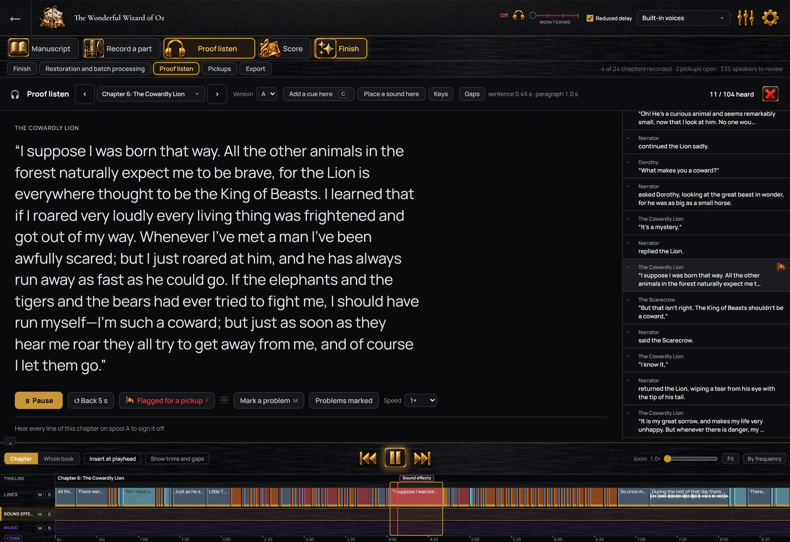

Free for performers
The invitation opens the program for you with no account and nothing to pay. You record and send; the author’s plan covers it.
For narrators
You read, and each take is saved under its line of the script, in the order the book was written. What follows is one session.
No card. You bring your own microphone and headphones.
You open the chapter and press Start. After a count-in the script rolls at the pace you set, the line you are reading held in a band, the text as large as you want it from where you sit. You hear yourself in your headphones, and nothing else on the computer is muted while StellAurator is open. Any microphone Windows can see works; the microphone guide compares them by budget.
Halfway through, you trip on a sentence. You do not stop. You go back to the start of the sentence, read it again and carry on. When you press stop at the end of the chapter, the click of the key is taken out of the recording, and the reading is divided into the manuscript’s lines by the words you read, on your own computer. The sentence you read twice sits on its line twice, and you choose which one stays.

Every line of the chapter now shows its take, with its waveform. Each take is compared with its line, so a word you left out or changed is marked before you move on. A line that needs another pass gets one on its own: record the line again and the new take sits beside the old one until you delete one. The recording you made is never changed, only divided. Clicks and breaths in the take are marked, each with a fix that you hear before and after and keep or not.

You play the chapter as it will be delivered, pauses included, and each line is ticked as you hear it. A line that needs a pickup gets a press of F without stopping the playback; the reason goes with it, and the marked lines wait in one list until you record them. When every line has been heard, the chapter is signed off. If a line is changed later, only that line needs hearing again.
The Finish step levels the chapter and measures it against ACX’s requirements before and after. It writes one MP3 per chapter in the format ACX asks for, each named for its chapter, or one M4B with chapter marks for other stores. A file with a computer voice is marked as containing computer-generated narration.

Working with authors
An author producing their book in StellAurator can invite you with a link. You see the lines assigned to you, with the author’s direction and the line before each one as your cue. Your recordings go back to the author, onto the lines you read; the production stays on their computer.
The invitation opens the program for you with no account and nothing to pay. You record and send; the author’s plan covers it.
For the books you produce yourself, one plan covers the whole studio on up to three computers.
No card, on 64-bit Windows 10 or 11. The installer is signed, so Windows shows the publisher when you run it. A Mac version is coming; get notified.